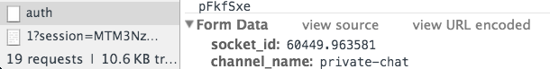

Let's quickly build up a chat solution from a number of templates. Then we'll look at adding authentication and restricting who can subscribe to the real-time stream of chat messages.
As mentioned in the chat introduction, a lot of the activity streams functionality that we've built could be ported to support chat functionality. Instead, let's take a number of templates to give us all we need for some basic chat functionality.
Save the ChatController.php template to app/Http/Controllers/ChatController.php.
<?php
namespace App\Http\Controllers;
use Illuminate\Http\Request;
use Illuminate\Http\Response;
use Illuminate\Support\Facades\App;
use Illuminate\Support\Facades\Session;
class ChatController extends Controller
{
var $pusher;
var $user;
var $chatChannel;
const DEFAULT_CHAT_CHANNEL = 'chat';
public function __construct()
{
$this->pusher = App::make('pusher');
$this->user = Session::get('user');
$this->chatChannel = self::DEFAULT_CHAT_CHANNEL;
}
public function getIndex()
{
if(!$this->user)
{
return redirect('auth/github?redirect=/chat');
}
return view('chat', ['chatChannel' => $this->chatChannel]);
}
public function postMessage(Request $request)
{
$message = [
'text' => e($request->input('chat_text')),
'username' => $this->user->getNickname(),
'avatar' => $this->user->getAvatar(),
'timestamp' => (time()*1000)
];
$this->pusher->trigger($this->chatChannel, 'new-message', $message);
}
}
This controller makes sure the user is logged in via GitHub when the /chat (the getIndex() function) is accessed.
The postMessage(Request $request) function is used to handle an AJAX request from the view and trigger a new-message event on a channel named chat. The event payload consists of the text supplied by the user, their username, their avatar URL, and the timestamp (milliseconds since the epoch) when the message was received.
Add the new controller to app/Http/routes.php:
Route::controller('chat', 'ChatController');
Save the chat.blade.php template to resources/views/chat.blade.php.
Whenever a message is to be sent to the server the sendMessage() function is called - triggered either by a button being clicked or the user pressing enter.
The chat channel is subscribed to, and the new-message bound to with a addMessage callback handler.
The addMessage function builds a message element, taking all the values from the data event payload` and adds it to the UI.
Navigate to http://localhost:8000/chat to see the chat application in action.
It's really no fun to chat with yourself. So, if you're in a instructor-lead workshop you should now have been given a set of Pusher application credentials that everybody in the workshop can use. Replace the ones you have in your .env with these new ones, refresh your app and start chatting with the other workshop attendees.
Pusher has been built with integration in mind; in this case to make it as easy as possible to integrate with existing technologies and framework mechanisms. In our app we have a very basic - albeit, a bit hacky - authentication mechanism. That is, does a user exist in the Session.
By demonstrating how to use this to authenticate mechanism with Pusher it should be easy to see how you can integrate other "less hacky" solutions.
Pusher provides a type of channel called a private channel that require authentication in order for a subscription to that channel to be allowed.
Private channels are identified by a simple private- naming prefix e.g. private-chat. When the Pusher JavaScript library sees that a subscription is made to a channel with a private- prefix the library itself will make a POST request to an authentication endpoint on the server the app is served from. This will be your own application server. By default this endpoint will be /pusher/auth, but it can be configured.
To see this in action, navigate to http://localhost:8000/chat, open up the developer tools in your browser and go to the network tab.
Next, change the name of the channel that's we're subscribing to. Change it from chat to private-chat. This is configured for both the controller (for event triggering) and the view (for subscribing) in app/Http/ChatController::DEFAULT_CHAT_CHANNEL.
In the developer tools network tab you'll see a POST request to http://localhost:8000/pusher/auth. Not only do we not have a route set up for this, but upon closer inspection you'll also see that the response is a 500 error complaining about a TokenMismatchException.
This exception is being caused by Laravel's CSRF (Cross Site Resource Forger) protection. Those eagle-eyed amongst you may have already seen $.ajaxSetup being called at the top of our views in order to send a X-CSRF-TOKEN header which fixes this for jQuery AJAX calls.
Let's also send the X-CSRF-TOKEN header with the Pusher authentication AJAX requests. The second parameter to the Pusher constructor is for options in the form of an object literal.
Update the line that instantiates a Pusher instance to pass auth configuration:
var pusher = new Pusher('{{env("PUSHER_KEY")}}', {
auth: {
headers: {
'X-CSRF-TOKEN': $('meta[name="csrf-token"]').attr('content')
}
}
});
The X-CSRF-TOKEN value is being retrieved from a <meta> tag defined in the header in the same way as is used in the $.ajaxSetup.
Now try refreshing the chat application. We'll now get a 404 error for the request to /pusher/auth. This means the CSRF problem has been fixed, but we still don't have the auth endpoint - /pusher/auth isn't defined an a route anywhere in our app!
Let's make sure the Pusher JavaScript library is going to authenticate against a valid route.
Add the following function to app/Http/Controllers/ChatController.php:
public function postAuth(Request $request)
{
}
Next, we should configure the Pusher JavaScript instance to use our new /chat/auth route. In resources/views/chat.blade.php update the line that instantiates a Pusher instance to pass an authEndpoint option with the /chat/auth value:
var pusher = new Pusher('{{env("PUSHER_KEY")}}', {
authEndpoint: '/chat/auth',
auth: {
headers: {
'X-CSRF-TOKEN': $('meta[name="csrf-token"]').attr('content')
}
}
});
Refresh the page and this time you'll see a POST request to /chat/auth which succeeds. But if you check the browser console you'll see a log message saying Pusher : No callbacks on private-chat for pusher:subscription_error.
This is because the authentication endpoint (/chat/auth) needs to return a signature that can then be used by the Pusher JavaScript library as part of the subscription with the Pusher service. If the Pusher service fails to validate the signature the subscription will be disallowed. In this case our endpoint isn't returning any data so the subscription is obviously going to fail.
If you look at the parameters passed in the POST request to /chat/auth you'll see a socket_id and a channel_name. The socket_id is a unique ID for the connection to Pusher and the channel_name is the name of the channel that the client is attempting to subscribe to.

We use these values to create a signature using the Pusher PHP library - after we've written our own logic to determine if we want the current user to be able to subscribe to the channel.
Update ChatController::postAuth with the following authentication logic:
socket_id and channel_name values from the $request e.g. $channelName = $request->input('channel_name');$auth = $this->pusher->socket_auth($channelName, $socketId) (docs)401 Unauthorized. Once you've got the logic in place use the Pusher Debug Console and the Pusher JavaScript logging to verify the private-chat channel is being used.
You now have an authenticated real-time chat application.
Although Pusher channel authentication can take a little bit of work to get your head around, once you understand it you can easily see how it will integrate with most authentication mechanisms - either by using sessions or by passing values down with the authentication request as we did with the CSRF value.
Let's briefly cover what we've learned in this section.